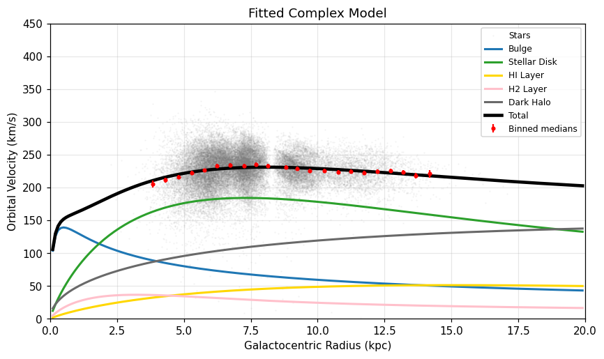

A notebook that queries the ESA Gaia Archive on its own, turns 36,592 stars into a Galactocentric rotation curve, fits four models to it, and then tests those models on stars it has never seen. Everything on this page was produced by the code in the repository, with no pre-packaged data files.

Every model is scored against the same binned curve with the same covariance matrix, so the numbers are directly comparable, and lower is better throughout. The last column is the gap in Bayesian Information Criterion to the best model, where a gap above 10 counts as very strong evidence.
| Model | k | χ² | dof | χ²/dof | AIC | BIC | ΔBIC |
|---|---|---|---|---|---|---|---|
| Keplerian | 1 | 3676.6 | 21 | 175.07 | 3678.6 | 3679.7 | 3651.0 |
| Linear | 2 | 88.5 | 20 | 4.42 | 92.5 | 94.7 | 66.0 |
| Simple | 2 | 54.9 | 20 | 2.74 | 58.9 | 61.1 | 32.4 |
| Complex | 3 | 19.4 | 19 | 1.02 | 25.4 | 28.7 | 0.0 |
Gaia's data releases are not independent surveys, so a "DR2 test set" usually contains the same stars as a DR3 training set, re-measured. Here the split is done by star, and the audit has to come back empty for the test to mean anything.
| Stars | |
|---|---|
| Training stars (DR3) | 36608 |
| Test stars downloaded (DR2) | 5971 |
Test stars sharing a source_id with training | 0 |
| Test stars within 1″ of a training star (removed) | 0 |
| Independent test stars kept | 5971 |
The models below were fitted to the DR3 stars only, then scored on the DR2 stars without any refitting.
| Model (trained on DR3) | χ² on test | χ² per bin |
|---|---|---|
| Keplerian | 1081.7 | 67.61 |
| Linear | 53.7 | 3.36 |
| Simple | 45.5 | 2.85 |
| Complex | 19.2 | 1.20 |
| Derived quantity | Value | Literature |
|---|---|---|
| Local dark matter density ρDM(R0) | 0.20 ± 0.06 GeV/cm³ | 0.2–0.6 GeV/cm³ (Read 2014; de Salas & Widmark 2021) |
| Stellar disk mass Md | 7.1 × 1010 ± 1.3 × 1010 M☉ | ≈ 4–6 × 10¹⁰ M☉ (Bland-Hawthorn & Gerhard 2016) |
| Dark matter fraction at the Sun fDM(R0) | 0.23 ± 0.07 |
Across the training bins, the Complex model is preferred by the Bayesian Information Criterion, ahead of the Simple model by ΔBIC = 32.4, which counts as very strong evidence. The Keplerian point-mass curve is ruled out by a wide margin, which is the classic signature that the Milky Way's mass keeps growing well beyond its bright center.
git clone https://github.com/OWNER/REPO.git cd REPO pip install -r requirements.txt jupyter lab Rotation.ipynb
The first run submits two asynchronous jobs to the Gaia Archive and takes a few minutes to half an hour. Results are cached locally, so later runs are immediate.